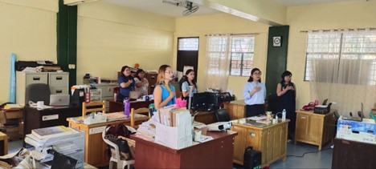

By IPPRC Coordinator || Date Posted: May 31, 2023
To achieve a culture of quality and excellence, the CBE's Bachelor of Science in Business Administration major in Financial Management and Marketing Management was re-visited and accredited online by the AACCUP for LEVEL III Phase 2 on May 29-31, 2023.
The CBE Team prepared and uploaded research, extension, faculty, and linkages/consortia documents. Dr. Ivy Mar Ramos and Dr. Sisendo Masangca Jr. thoroughly evaluated these documents and despite the premeditated power outage, the accreditation task force was able to defend and respond to the accreditors' questions during the Q&A segment.
The hardworking accreditation task force are as follows:
Dr. Dolores B. Galvez, Dr. Chery B. Cabading, Ms. Fil Art Marie B. Baltazar and Ms. Revelyn L. Marcos (Instruction); Dr. Renalee V. Valenzuela, Ms. Flormelyn D. Tumenez, Mr. Daren S. Erana and Prof. Gayon P. Sarmiento (Extension); Dr. Aljanet M. Jandoc, Ms. Katrine Angela A. Tucay, Ms. Zharmaine C. Ramos and Ms. Ma. Elizabeth B. Espiritu (Consortia/Linkages); Ms. Mercedes B. Pumihic, Ms. Cherrie Prelle DG Pascual, Dr. Claire R. Reginalde and Dr. Marjorie B. Ramel (Faculty).